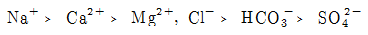
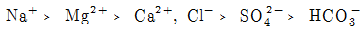
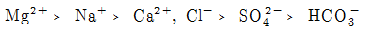
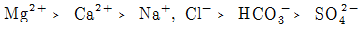
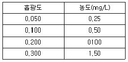

해양환경기사 (2004-05-23 기출문제)
1과목: 해양학개론
1. 해수 중 용존기체의 해양-대기간 기체교환에 관계가 가장 적은 것은?
- 기체의 확산계수
- 대기와 표층수의 기체분압차이
- 해수표면막의 두께
- 표층수의 이온강도(ionic strength)
(정답률: 88%)

2. 다음 중 표층 해류 생성의 주된 원인이 되는 것은?
- 해양-대기 열수지
- 바람
- 밀도구조
- 지구자전
(정답률: 88%)
3. 직경이 62.5㎛이하의 퇴적물을 입도분석하는 방법은 어떤 것이 가장 적절한가?
- Sieve방법
- Pippette방법
- Turbidity방법
- 물리탐사법
(정답률: 84%)
4. 일반적인 해수 중의 무기성분 분포 함량을 표시한 것 중 가장 올바른 것은?




(정답률: 80%)
5. 다음 중 방사성 핵종의 붕괴방정식으로 맞는 것은? (단, A는 시간 t경과후 방사능 농도, Ao는 초기의 방사능 농도, λ 는 붕괴상수, t는 시간 이다.)
- A = Ao× (-λ t)
- Ao = A x (-λ t)
- Ao = Ae-λ t
- A = Aoe-λ t
(정답률: 86%)
6. 대양저의 열류량에 대한 일반적인 양상 중 틀린 것은?
- 대서양 중앙해저 산맥에서는 높은 열류량을 나타낸다.
- 동태평양 해팽에서는 낮은 열류량을 나타낸다.
- 해구에서는 낮은 열류량을 나타낸다.
- 해저산맥의 측면을 따라 열류량이 작은 지역이 띠를 이룬다.
(정답률: 82%)
7. 다음 중 반원양성(Hemi-pelagic) 퇴적환경인 곳은?
- 대양저
- 대륙붕
- 대양대지
- 해구
(정답률: 62%)
8. 하와이 동남부에 위치한 망간단괴가 풍부한 C-C Zone은 지질 구조상 다음 중 어느 것에 해당하는가?
- 단열대
- 대양저 산맥
- 해구
- 대륙대
(정답률: 46%)
9. 대서양형 대륙주변부의 해저지형으로서 가장 수가 많고 많이 발달한 것은?
- 대륙붕 수로
- 삼각주 전면계곡
- 해저협곡
- 심해저 수로
(정답률: 67%)
10. 한반도 주변에 가장 흔한 점토광물은?
- kaolinite
- chlorite
- illite
- smectite
(정답률: 83%)
11. 연체동물이나 절족동물(arthropod)에 고농도로 함유되어 있는 원소는?
- 비소
- 철
- 알루미늄
- 칼슘
(정답률: 74%)
12. 해수 중의 음파의 전파 속도는?
- 수온이 높을수록 빠르고, 수압이 클수록 빠르다.
- 수온이 높을수록 느리고, 수압이 클수록 빠르다.
- 수온이 높을수록 빠르고, 수압이 클수록 느리다.
- 수온이 높을수록 느리고, 수압이 클수록 느리다.
(정답률: 82%)
13. 성층해수(stratified ocean)에서 해류속도가 수심에 따라 감소할 경우 밀도 경계면의 경사는 해면 경사와 비교하여 그 경사방향과 경사크기는?
- 같은 방향으로 같다.
- 같은 방향으로 더 크다.
- 반대 방향으로 같다.
- 반대 방향으로 더 크다.
(정답률: 62%)
14. 취송류에서 해면의 유향과 정반대의 유향이 되고 해면 유속의 약 4% 정도의 유속으로 감소되는 심도는?
- 역학심도
- 마찰심도
- 무류면
- 보상심도
(정답률: 74%)
15. 수준면(Level Surface)이란?
- 중력포텐샬(potential)이 모든 곳에서 같은 면이다.
- 수온이 모든 곳에서 같은 면이다.
- 염분이 모든 곳에서 같은 면이다.
- 수온 및 염분이 모든 곳에서 같은 면이다.
(정답률: 77%)
16. 지구상에 일어나는 조석(潮汐) 중, 다음 어느 경우가 최소 조차를 보이는가?
- 달과 태양의 위치가 지구에 대해 서로 반대방향으로 일직선상에 있을 때
- 달과 태양의 위치가 지구에 대해 직각을 이룰때
- 달과 태양의 위치가 지구에 대해 같은 방향으로 일직선상에 있을 때
- 달과 태양의 위치가 지구에 대해 45° 각도를 이룰 때
(정답률: 85%)
17. 대마난류와 무관한 것은?
- 쿠로시오의 한 지류다.
- 한반도 남동해안과 일본서안을 따라 북상한다.
- 수온이 높은 해수를 동해에 유입시킨다.
- 염분도가 낮은 해수를 동해에 유입시킨다.
(정답률: 81%)
18. 북반구에 존재하는 동안류와 서안류를 비교 기술한 것 중 사실과 다른것은?
- 동안류는 폭이 넓고 서안류는 폭이 좁다.
- 해류층의 두께가 동안류는 얇고 서안류는 두껍다.
- 동안류는 편서풍대에서 흘러오며, 저온, 저염분이고 서안류는 무역풍대에서 흘러오며 고온, 고염분이다.
- 연안류와의 경계가 모두 분명하다.
(정답률: 80%)
19. 지형류(Geostrophic currents)에서 균형을 이루는 힘이 아닌 것은?
- 중력
- 마찰력
- 압력경도력
- 코리올리 힘
(정답률: 68%)
20. 해양의 표면염분 분포에 가장 큰 영향을 주는 것은?
- 증발-강수량의 차
- 바람분포
- 수온분포
- 심층해류
(정답률: 87%)
2과목: 해양생태학
21. D.S.L 심해 산란층의 생성 주요 원인 생물은?
- 규조류(Diatom)
- 유우파우시아(Euphausia)
- 편모조류(Dinoflagellata)
- 멸치 어군
(정답률: 86%)
22. 해양의 미세화석(Microfossil)을 이루는 무리가 아닌 것은?
- 유공충
- 규조류
- 방산충
- 다모류
(정답률: 75%)
23. 홍해의 해수 색깔은 해수 중 항상 붉은 색을 띄고 있는데 이는 부유생물 때문이다. 다음 중 어느 것이 가장 깊게 관련되어 있는가?
- Noctiluca
- Ceratium
- Chaetoceros
- Trichodesmium
(정답률: 79%)
24. 반폐쇄적인 연안에서 유기물로 인한 오염현상이 발생하였을 때 저서 생태계에 일어나는 현상이 아닌 것은?
- 생체량이 큰 개체들이 출현한다.
- 종 다양도가 낮아진다.
- 기회종의 우점도가 높아진다.
- 다모류 출현 비율이 높아진다.
(정답률: 87%)
25. 저서 생물의 분포에 대한 설명 중 틀린 것은?
- 해저의 물리적 특성에 좌우된다.
- 부유성 유생기를 갖는 종류는 드물다.
- 생체량은 수심의 증가에 따라 감소한다.
- 생태학적으로 비슷한 종간의 경쟁은 주로 서식장소를 위한 경쟁이다.
(정답률: 74%)
26. 생태학적 견지에서 볼 때 높은 탁도(high turbidity)의 가장 중요한 의미는?
- 동물들의 숨을 막히게 한다.
- 태양광선의 투과를 감소시킨다.
- 여과식자(filter feeder)에게는 매우 좋다.
- 포식자로부터 저서동물을 보호하기가 쉽다.
(정답률: 82%)
27. 다음의 해저 퇴적물의 입도계층에 관련된 설명 중 틀린 것은?
- 입도구분은 역질(gravel), 사질(sand), 실트(silt), 점토(clay)로 구분한다.
- 역질에는 잔자갈, 암괴등이 속한다.
- 실트의 크기는 사질보다 크다
- 니질(mud)은 실트와 점토를 합한 것이다.
(정답률: 82%)
28. 다음 중 하구역 간석지에 주로 출현하는 동물 가운데 모래가 많은 곳에 주로 서식하는 종류는?
- 칠게, 무당게
- 흰발농게, 엽낭게
- 넓적콩게, 칠게
- 농게, 세스랑게
(정답률: 85%)
29. 수심이 얕은 연안역과 조간대지역의 저서생태계에 가장 큰 영향을 미치는 물리적 환경 요인은?
- 파랑
- 염분
- 광도
- 먹이
(정답률: 59%)
30. 중형 저서동물은 다양한 식성을 나타내는데 어떤 식성이 가장 많이 나타나는가?
- 포식자
- 미소 해조식자
- 유기쇄설물 입자
- 현탁물식자
(정답률: 59%)
31. 외양에 비하여 연안에서 적조현상이 자주 일어나는 이유를 설명한 것 중 가장 옳지 않는 것은?
- 육지로부터 질소와 인이 많이 공급된다.
- 일조량이 풍부하여 광합성작용이 활발하다.
- 희귀 원소와 비타민의 용존함량이 높다
- 유입된 영양염류가 장기간 정체한다.
(정답률: 83%)
32. 썰물 때에는 대기에 노출되기도 하며, 일사, 수온, 강우, 염분, 파랑 등의 환경 조건의 변화가 격심한 곳은?
- 천해대
- 조간대
- 점심해대
- 심해대
(정답률: 89%)
33. 폐쇄적인 만에서 양식생물의 배설물 등이 저층에 쌓여 나타나는 주된 현상은?
- 생산량 증가
- 영양염 공급으로 인한 생물량 증가
- 다양도 증가
- 유기물 분해로 인한 빈산소현상
(정답률: 84%)
34. 수계에서 식물플랑크톤 및 식물이 생활하는데 필요한 기초 영양염류로서 가장 필요한 것은?
- 규소, 질소, 인
- 질소, 인, 칼슘
- 칼륨, 마그네슘, 질소
- 규소, 인, 칼슘
(정답률: 83%)
35. 다음은 우리 나라 연성 기질의 갯벌 생태계에 서식하는 저서생물 군집의 분포를 결정하는 가장 중요한 환경요인을 들었다. 이 중 상대적으로 가장 관계가 먼 것은?
- 조위
- 온도
- 포식
- 저질의 입도
(정답률: 75%)
36. 다음 중 가장 하등한 어류에 속하는 것은?
- 먹장어류
- 상어류
- 가오리류
- 아귀류
(정답률: 87%)
37. 생태계 구성요소 중에서 유전자의 교환이 가능한 개체의 집합으로서 동일한 장소에 서식하는 개체들을 총칭하는 것은?
- 종
- 개체
- 개체군
- 군집
(정답률: 80%)
38. 조하대에 발달한 잘피군락에 대한 설명으로 틀린 것은?
- 연안생물의 은신처로서 기능을 한다.
- 파랑으로부터 연안역 침식방지를 한다.
- 해양식물이므로 포자로 번식을 한다.
- 해양식물이지만 뿌리, 줄기, 잎이 분화되어 있는 고등식물이다.
(정답률: 82%)
39. 염습지를 구성하는 생물로서 우리나라의 염습지에서 주로 발견되는 식물은?
- 망그로브
- 칠면초
- 스파르티나
- 모자반
(정답률: 77%)
40. 중형저서생물(meiobenthos)의 정의를 보다 구체적으로 가장 먼저 내린 사람과 연도는?
- Nicholls (1935)
- Mare (1942)
- Thorson (1957)
- Petersen (1918)
(정답률: 82%)
3과목: 해양계측학
41. 심해저 시추선 glomer challenger호가 시추를 할 때 위치를 유지하도록 하는 dynamic positioning system은 어떤 기구를 이용하는가?
- 소나
- 인공위성
- 로란
- 레이다
(정답률: 65%)
42. 다음 중 음파를 이용하여 해저를 조사하는 기기가 아닌 것은?
- Subbottom Profiler
- Air-Gun
- Sono-Buoy
- Piston-Corer
(정답률: 76%)
43. 암석(rocks)의 연대측정(age-dating)에 사용되는 방법들 을 열거 하였다. 이중 아닌 것은?
- K-Ar Method
- Stable Isotopes
- Magnetostratigraphy
- Varve chronology
(정답률: 61%)
44. 방향 탐지기가 아닌 것은?
- Loran
- Decca
- Antenna
- Raydist
(정답률: 61%)
45. 현재 원격탐사에 이용되지 않는 파는?
- 가시광선
- 열적외선
- Micro wave
- X - 선
(정답률: 75%)
46. 다음 유속계중 유속의 측정범위가 가장 큰 것은?
- Aanderaa RCM4
- Aanderaa RCM5
- EG & G VMCM
- Braystoke DRCM
(정답률: 50%)
47. 해수 중 탄산염의 용해속도가 급격히 증가하는 수심을 무엇이라고 하는가?
- 영구약층
- 용해약층
- 보상심도
- 포화심도
(정답률: 60%)
48. 다음 중 교란이 가장 적은 해저퇴적물 채집 기구는?
- Piston corer
- Vibratory corer
- Rotary drilling corer
- Dredge
(정답률: 74%)
49. 도플러 소나(Doppler sonar)의 주된 용도는?
- 수온측정
- 수심측정
- 항해속도 측정
- 염분측정
(정답률: 59%)
50. 해면의 기름에 의한 오염상태 파악에 가장 적합한 것은?
- 적외선 방사계
- 마이크로파 산란계
- 마이크로파 고도계
- 마이크로파 방사계
(정답률: 81%)
51. 다음 중 조석관측 방법으로 이용되지 않는 것은?
- 부표식
- 압력식
- 표척식
- 지자기식
(정답률: 80%)
52. 다음 채니기 중 저서생물 채집에 적당한 것은?
- corer
- dredge
- closing net
- van Dorn sampler
(정답률: 70%)
53. 원격탐사를 위해 가장 먼저 해야할 자료처리 작업은?
- 기하학적 보정
- 레디오메타 변환
- 영상강조
- 결과표시
(정답률: 74%)
54. 다음 중 해양의 지질구조를 결정하는 해저탐사 방법이 아닌 것은?
- 탄성파 측정
- 중력측정
- 지자기측정
- 수심측정
(정답률: 65%)
55. 다음 중 원하는 수심층에서 플랑크톤을 채집할 수 있는 채집기는?
- 헨센(Hensen)식 플랑크톤 그물
- 클라아크-범퍼식(Clarke-Bumpus) 채집기
- 하아디(Hardy)식 플랑크톤 연속기록기
- Norpac - Net
(정답률: 60%)
56. 조류의 예보 방법에서 해면차를 이용하지 않는 것은?
- 비조화법
- 조화법
- 개정수법
- 분조법
(정답률: 72%)
57. 해양환경에 있어서 유기물 오염의 지표로서 타당하지 않은 것은?
- 용존산소(DO)
- 생물화학적산소요구량(BOD)
- 화학적산소요구량(COD)
- 클로로필 a
(정답률: 78%)
58. 국제표준 수심을 적절히 나열한 것은?
- 0m, 5m, 10m, 20m, 30m, 50m
- 0m, 10m, 15m, 20m, 30m, 50m
- 0m, 10m, 20m, 35m, 50m, 70m
- 0m, 10m, 20m, 30m, 50m, 75m
(정답률: 84%)
59. NOAA-7위성으로 관측된 해표면 수온의 해상도는?
- 0.011Km
- 0.11Km
- 1.1Km
- 11Km
(정답률: 81%)
60. GEK해류계를 이용하는데 알맞지 않은 지구상의 위치는?
- 지자기 적도부근
- 지자기 30° 부근
- 지자기 60° 부근
- 지자기 극 부근
(정답률: 78%)
4과목: 해수의 수질분석
61. 알칼리성에서의 과망간산칼륨에 의한 화학적산소요구량 분석에 대한 설명 중 틀린 것은?
- MnO4-의 환원이 알칼리에서 진행되면 환원전위가 낮아지므로 Cl-의 간섭을 제거할 수 있다.
- 산성법보다 산화력이 감소한다.
- 산성법에 비하여 검수의 량을 늘려야 한다.
- 산성법보다 산화시간을 늘려야 한다.
(정답률: 57%)
62. 원자흡수분광법에 의한 해양의 퇴적물이나 생물시료 중의 중금속을 정량할 때 메트릭스효과가 방해작용을 할 수 있다. 이를 막을 수 있는 효과적인 방법은?
- 시료를 산으로 분해하여 중금속만을 침출시켜서 측정한다.
- 표준물 첨가법(standard addition method)을 이용한다.
- 유기용매로 추출한 후 측정한다.
- 염분이 문제가 되므로 표준용액을 제조할 때 해수를 사용하면 된다.
(정답률: 84%)
63. 다음은 연안 해수시료를 1,000배 희석한 후 원자흡수분광법으로 칼슘농도를 측정한 결과이다.해수시료의 흡광도가 0.080일 때 칼슘농도는? (단, 공시험값은 무시한다.)

- 400 mg/L
- 600 mg/L
- 800 mg/L
- 1,600 mg/L
(정답률: 78%)
64. 다음 중 해수의 규산염-규소 정량과 관계가 없는 용액은?
- 페놀 용액
- 파라몰리브덴산암모늄 용액
- 메톨-아황산 용액
- 옥살산 용액
(정답률: 53%)
65. 다음 중 흡광광도법용 흡수셀의 재질로 부적합한 것은?
- 유리
- 석영
- 불활성금속
- 플라스틱
(정답률: 74%)
66. 대장균군 검체의 채취 및 조제 방법중 잘못된 것은?
- 멸균된 용기에 넣어 1시간내로 실험실에 운반하여 시험하여야 한다.
- 1시간 이상의 시간이 걸릴 경우에는 저온 냉장하여 운반하고 6시간내에 실험실에 도착하여 2시간 이내에 시험을 완료하여야 한다.
- 운반 및 시험이 정해진 시간내에 불가능할 경우에는 현지 시험기구 세트를 준비하여 현장에서 시험하여야한다.
- 검체중 잔류염소가 함유되었을 때에는 10% 수산화나트륨 용액으로 잔류염소를 제거하여야 한다.
(정답률: 62%)
67. 염분계(Salinometer)를 이용하여 해수 시료의 염분을 측정하려고 한다. 다음 설명 중 틀린 것은?
- 먼저 시료의 온도를 실온으로 맞춘다.
- 표준해수를 셀속에 일차 주입시켜 셀을 세척한 다음 다시 주입시키고 온도와 염분을 측정해서 염분계를 보정한다.
- 시료를 셀속에 주입시켜 셀을 세척한 다음 세척액은 버리고 다시 시료를 주입시켜 염분을 측정한다.
- 표준해수는 시료수에 관계없이 측정초기에 한번 사용하여 염분계를 보정하는 것으로 충분하다.
(정답률: 72%)
68. 해양생물 시료중의 유기염소계 농약을 기체크로마토그래프로 분석할 때 유기용매로 추출한 후 기체크로마토그래프에 주입하기 전에 실리카겔/알루미나 칼럼에 통과시켜 세척한다. 그 이유는?
- 염분 등 분석방해물질을 제거하기 위해
- 수분을 제거하기 위해
- 지방 등 분석 방해 물질을 제거하기 위해
- 부유물질을 제거하기 위해
(정답률: 78%)
69. 해수 중의 총유기탄소를 측정하는 방법과 관련이 없는 것은?
- 킬달(Kjieldahl) 장치로 시료를 전처리 한다.
- 시료 중의 유기물을 완전 연소시켜 이산화탄소를 발생시킨 후 이를 측정한다.
- 총유기탄소분석기는 적외선 검출기를 이용하여 검출한다.
- 유효 측정범위는 검출한계∼100 mg/L 까지이다.
(정답률: 84%)
70. Lamber-Beer 법칙과 관계가 없는 것은?
- 흡광도는 층장의 두께에 비례한다.
- 흡광도는 용액의 농도에 비례한다.
- 투광도는 층장의 두께에 비례한다.
- 투광도는 용액의 농도에 반비례한다.
(정답률: 71%)
71. 해수 시료의 채취시 고려해야 할 사항 중 틀린 것은?
- 해수질의 수평분포 변화가 잘 나타날 수 있도록 채취지점의 수평적인 간격과 수를 결정한다.
- 채취지점의 밀도약층을 고려하여 해수질의 수직분포가 잘 나타날 수 있도록 수직간격과 채취수심을 결정한다.
- 조사목적과 시간에 따른 해수질의 변화폭이 잘 나타날 수 있도록 필요한 시간간격을 결정한다.
- 동일 채취지점에서 수질지수에 관계없이 한개 시료만 채취하면 충분하다.
(정답률: 86%)
72. 카드뮴 환원법에 의한 질산성질소 측정법에 관한 설명 중 틀린 것은?
- 질산성질소는 카드뮴환원관을 이용하여 아질산이온으로 환원시킨다.
- 아질산이온의 농도를 측정하여 질산성질소 농도를 구한다.
- 본래 시료중에 포함되어 있던 아질산성 질소 농도는 미리측정하여 빼어준다.
- 카드뮴환원관을 통과한 질산성질소는 220nm 자외선에서 흡광도를 측정한다.
(정답률: 59%)
73. 4-아미노 안티피린법에 의한 페놀류의 측정에서 황산구리 용액을 가하는 이유는?
- 생물학적 산화방지를 위해서이다.
- 금속이온의 방해작용을 방지하기 위해서이다.
- pH를 조절하기 위해서이다.
- 발색시약이다.
(정답률: 72%)
74. 해수 시료의 pH 측정에 관한 다음 설명 중 틀린 것은?
- pH는 적조가 발생할 때 감소한다.
- pH는 해수 중의 수소이온 농도 변화에 따라 달라진다.
- pH는 해수의〔HCO3-〕농도에 크게 의존한다.
- pH는 해수의 온도와 압력의 변화에 따라 측정값이 달라 진다.
(정답률: 64%)
75. 다음은 시료의 보존방법에 관한 내용이다. 그 방법이 잘못 기술된 것은?
- 페놀 함유시료는 인산산성으로 pH 4 이하로 조정한 후 황산구리를 첨가한다.
- 시안 함유시료는 NaOH 알칼리 용액으로 pH 12 이상으로 한다.
- 알킬수은 함유시료는 진한질산을 가하여 산성으로한다.
- n-Hexane 추출물질 함유시료는 황산산성으로 pH 4이하로 한다.
(정답률: 48%)
76. 다음은 분석자료의 통계처리와 표현방법에 대한 일반적인 내용에 관한 것이다. 옳지 않은 것은?
- 정확도는 참값과 측정값과의 편차를 뜻한다. 정확도는 일정한 편차로 표현되며 이러한 편차는 보정이 안된 기기를 사용할 때 일어난다.
- 모든 시료의 농도는 반드시 4 종류 이상의 상이한 검정농도와 이에 대한 분석신호를 변수로한 통게적인 회귀직선법에 의해 결정된 검정관계식을 이용하여 구한다.
- 검출한계란 지정된 공정시험법에 따라 시험하였을 때 바탕용액 농도의 오차범위와 통계적으로 다르게 나타나는 최소의 측정 가능한 농도를 의미한다.
- 정확도란 일정값을 반복 측정하였을 때의 분산정도를 의미한다.
(정답률: 61%)
77. 해수중의 Chlorophyll-a 측정에 관한 사항 중 틀린 것은?
- Chlorophyll-a 함량은 식물플랑크톤 생체량을 나타내는 지표이다.
- 해수시료를 유리섬유여과지로 여과하여 아세톤으로 Chlorophyll-a 를 추출한다.
- 아세톤으로 추출된 Chlorophyll-a를 흡광광도법이나 형광법으로 측정한다.
- Chlorophyll-a 표준용액으로 작성된 검정선으로부터 농도를 산출한다.
(정답률: 71%)
78. 퇴적물내 공극수를 추출하는 작업환경으로 가장 적절한 경우는?
- 질소 가스가 충진된 저온 box내에서 작업
- 10℃ 정도의 일반 실험실에서 작업
- 퇴적물이 시추된 조사선 갑판
- 상온(15℃ 정도)의 일반 실험실에서 작업
(정답률: 78%)
79. 퇴적물의 황화물 측정에 관한 사항중 옳지 않은 것은?
- 퇴적물내 황화물이 많다는 것은 퇴적물이 오염되어 산소결핍이 일어남을 의미한다.
- 시료를 보관처리하는 과정에서 공기와 접촉하지 않도록 해야한다.
- 퇴적물 시료에 염산을 가해 황화물을 황화수소로 바꾼 후 요오드 적정법으로 정량한다.
- 퇴적물시료에 염산을 가해 황화물을 황산염으로 산화시킨 후 요오드 적정법으로 정량한다.
(정답률: 58%)
80. 기체 크로마토그래피법으로 알킬수은을 정량할 때 다음 중 틀린 것은?
- 검출기: 전자포획 검출기(ECD)
- 운반기체: 질소 또는 헬륨
- 유효 측정범위: 0.5 ㎍ Hg/l
- 검출기 온도: 250∼300 ℃
(정답률: 68%)
5과목: 해양관련법규
81. 현행 해양오염방지법의 근간이 되는 국제협약은?
- 1954 OILPOL
- 73/78 MARPOL
- OPRC 협약
- UN 해양법협약
(정답률: 77%)
82. 해양오염방지법상 선박에 설치되는 오염방지설비에 대하여 수검하는 검사의 종류에 포함되지 않는 것은?
- 정기검사
- 중간검사
- 제조검사
- 임시검사
(정답률: 61%)
83. 유조선으로부터 화물유가 함유된 물밸러스트 배출요건으로 적합하지 않은 것은?
- 유조선이 항행중에 배출할 것
- 기름의 순간배출률이 1해리당 60리터 이하일 것
- 육지로부터 50해리 이상 떨어진 곳에서 배출할 것
- 기름오염방지설비가 작동 중에 배출할 것
(정답률: 75%)
84. 다음의 공해제도에 대한 설명 중 틀린 것은?
- 모든 국가의 군함에 의하여 해적행위를 진압하기 위한 나포권이 행사된다.
- 모든 국가는 무허가 방송을 진압함에 있어서 상호협력할 의무가 있다.
- 공해에서의 임검권 행사는 군함에만 있으며, 군용항공기 및 정부선박· 정부항공기에게는 임검권이 없다.
- 추적개시 요건이 충족되고 추적선이 정선명령을 내렸지만, 이에 불응하면 추적은 즉각 개시되어야한다.
(정답률: 63%)
85. 선박으로부터의 해양오염방지협약상 기름배출이 금지된 특별해역은?
- 동중국해
- 뱅골만
- 지중해
- 멕시코만
(정답률: 77%)
86. 해양오염방지법상의 기름에 해당되지 않는 것은?
- 원유
- 석유가스
- 정제유
- 유성혼합물
(정답률: 77%)
87. 해양오염방지법에서 규제대상인 기름은?
- 고래기름
- 원유
- 액화석유가스
- 액화천연가스
(정답률: 73%)
88. 해양오염방지법상 선박의 오염방지 설비에 대한 검사를 받은 자가 그 검사 결과에 불복할 때 재 검사를 신청할 수 있는 것은 고지일로부터 몇 일 이내인가?
- 7일
- 30일
- 60일
- 100일
(정답률: 73%)
89. 유류오염손해배상보장법상 유류오염손해에 해당되는 것은?
- 선박내· 외부에서 발생한 손실 또는 손해
- 환경손상전부에 대한 손실 또는 손해
- 방제조치로 인한 추가적인 손실이나 손해는 포함되지 않는다
- 환경손상으로 인한 이익상실
(정답률: 40%)
90. 유류오염손해배상보장법상 "계산단위"란 무엇인가?
- 미국 달러화에 대한 원화의 환율
- 국제통화기금의 특별인출권
- 원화와 일본 엔화의 교환비율
- 증권사에 상장된 주식의 주가지수
(정답률: 84%)
91. 유류오염 손해배상 책임이 면제되지 않는 유류오염 사고는?
- 통상적인 선박 운항과실에 기인한 사고
- 불가항력적 천재지변에 기인한 사고
- 제3자의 고의만으로 인하여 발생한 사고
- 항해보조시설 관리상의 하자에 기인한 사고
(정답률: 71%)
92. 한국해양오염방제조합에 있어 조합원이 납부하여야 할 분담금의 기준이 되고 있는 것은?
- 배출된 기름 등 폐기물의 방제량
- 해양오염사고로 인한 손해액
- 배치 방제선의 총톤수를 조합원수로 나눈 비율
- 기름취급량 및 선박의 총톤수
(정답률: 50%)
93. 해양오염방지법의 입법 목적에 해당되지 않는 것은?
- 해양환경 실태의 예측
- 해양 오염원의 배출 규제
- 해양의 오염물질 제거
- 국민의 건강과 재산 보호
(정답률: 43%)
94. 해양오염방지법상 기름기록부의 보존기간은?
- 1년
- 2년
- 3년
- 4년
(정답률: 89%)
95. 어떠한 경우에도 해양에 투기해서는 안되는 물질은?
- 부유성 던니지
- 음식물 찌꺼기
- 금속성 폐기물
- 합성수지 어망
(정답률: 77%)
96. 유류오염 손해배상 보장법상 선박소유자의 책임원칙은?
- 과실책임주의
- 무과실책임주의
- 사용자책임주의
- 절대책임주의
(정답률: 57%)
97. 해양오염방지법상 선박에서 생기는 분뇨의 배출이 허용되는 최소한의 해역의 범위는 영해기선으로 부터 얼마인가?
- 3해리 이상 해역
- 12해리 이상 해역
- 25해리 이상의 해역
- 50해리 이상의 해역
(정답률: 68%)
98. 유류오염 손해배상 보장법상 최초의 사고가 발생한 날로 부터 손해배상청구의 소멸시효는?
- 1년
- 2년
- 4년
- 6년
(정답률: 77%)
99. 5천톤 이하 선박의 선박소유자가 유류오염손해배상 보장법에서 인정한 유한책임 한도액은?
- 237만 계산단위
- 451만 계산단위
- 631만 계산단위
- 897만 계산단위
(정답률: 64%)
100. 해양오염방지법에 의하여 국제특별해역 안에서만 운항하는 총톤수 400톤 이상의 선박이 기관구역에 설치해야 하는 기름오염방지설비가 아닌 것은?
- 기름여과장치
- 배출관장치
- 슬러지탱크
- 밸러스트 탱크
(정답률: 77%)